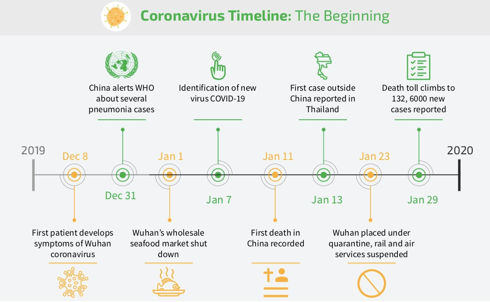

Background Origin And Dissemination
The first case of covid-19 also known as patient 0 reported in october 2019. It was in Wuhan, Hubei, China. It descends from a coronavirus that infects wild bats and it spreads to humans through wildlife hosts.
By December 2019, the spread of infection was almost entirely driven by human-to-human transmission. In early and mid-January 2020, the virus spread to other Chinese Provinces. On 20 January, China reported nearly 140 new cases in one day, including 2 people in Beijing and one in Shenzhen. Italy had its first confirmed cases on 31 January, 2020, 2 tourists from China. Italy overtook China as the country with the most deaths on 19 March,2020. By 26 March the United States had overtaken China and Italy with the highest number of confirmed cases in the world.
On Dec. 31, 2019. Chinese authorities reported the World Health Organization (WHO) of pneumonia cases in Wuhan City, Hubei province, China, with an unknown cause. What started as a mystery disease was first referred to as 2019-nCoV and then named COVID-19.
A lot of countries went into lockdown almost immediately to prevent the spreading of the virus, but those efforts still couldn’t prevent the millions of cases that were showing up all around the world. Lockdowns continued throughout 2020, forcing almost everyone to work or study from home until lockdowns began lifting towards the middle of 2021, and now almost every country has lifted their lockdown and most jobs and educational institutions are back to being in person.
The vaccinations began to be distributed around the world around March 2021 and within a few months, the majority of the world’s population had been vaccinated. This proved to be successful and monumental in getting life back on track. However, a “Delta” variant of the virus began appearing around the world which proved to be almost useless against it. This created panic around the world again and caused numerous countries to go back into lockdown.
